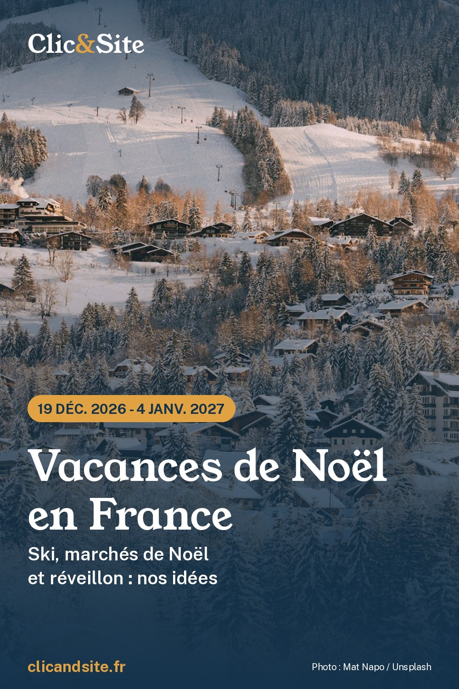

Vacances de Noël 2026 : les dates et où partir en France
Du samedi 19 décembre 2026 au lundi 4 janvier 2027 : ski, marchés de Noël, réveillon ou soleil, notre calendrier des vacances.
Photo : Mat Napo / Unsplash
Les vacances de Noël 2026 vont du samedi 19 décembre 2026 au lundi 4 janvier 2027, aux mêmes dates pour toute la France. Ski, marchés de Noël, réveillon à Paris ou soleil sur la Côte d’Azur : voici le calendrier des vacances et nos idées pour en profiter, avec un lien vers notre guide détaillé à chaque fois.
Le calendrier des vacances
- 19 déc.Début des vacances de Noël
Pour les trois zones et la Corse, jusqu’au lundi 4 janvier 2027 (reprise des cours).
- 19 déc.Ouverture de Megève et de La Grave
Le jour même des vacances. Val Thorens, Tignes, Courchevel ou l’Alpe d’Huez sont ouvertes depuis fin novembre ou début décembre.
- 20 déc.Fermeture de Riquewihr et Kaysersberg
Seul le premier week-end des vacances permet de les voir.
- 24 déc.Dernier jour du marché de Strasbourg
Le Christkindelsmärik de la place Broglie ferme le soir de Noël.
- 29 déc.Fin des marchés de Colmar
Le marché gourmand et la grande roue restent jusqu’au 3 janvier 2027.
- 31 déc.Réveillon du Nouvel An
Un jeudi soir : feu d’artifice gratuit sur les Champs-Élysées à minuit, dîners sur la Seine, fête à Nice.
- 3 janv.Fin des marchés de Nice, Cannes, Monaco et des Tuileries
Le marché des Champs-Élysées dure jusqu’au 4 janvier 2027.
Nos idées pour les vacances de Noël
Partir au ski
Pendant les vacances de Noël, les grandes stations des Alpes et des Pyrénées sont ouvertes. Les plus hautes, comme Val Thorens et Tignes, sont les plus sûres côté neige. C’est aussi la période la plus chère : voir notre comparatif des prix des forfaits 2026-2027.
Faire les marchés de Noël
Attention aux dates : en Alsace, Riquewihr et Kaysersberg ferment le 20 décembre et Strasbourg le 24. Pendant toute la durée des vacances, ce sont Paris, Nice, Cannes et Monaco qui restent ouverts, jusqu’au 3 ou 4 janvier 2027.
Fêter le Nouvel An
Le feu d’artifice gratuit des Champs-Élysées, un dîner croisière sur la Seine ou une fête au bord de la mer à Nice.
Chercher le soleil sur la Côte d’Azur
Des balades au bord de l’eau, les villages perchés sans la foule et les villages de Noël de Nice, Cannes et Monaco, faciles à relier en train.
Profiter de Paris en hiver
Illuminations, patinoires et musées : notre sélection pour les journées courtes de décembre.
Nos conseils
- Réservez vos trains tôt : les premiers et les derniers jours des vacances sont les plus demandés.
- Au ski, les deux semaines sont en haute saison : réservez l’hébergement et le matériel dès maintenant.
- Pour les marchés d’Alsace, partez dès le premier week-end des vacances.
Dates des vacances : arrêté du 22 octobre 2025 (Journal officiel du 23 octobre 2025). Autres dates relevées en novembre 2026 ; vérifiez avant de partir.
Nos guides pour les fêtes


Activités à réserver
Deux idées à réserver pour les vacances de Noël.
-
Cours de ski et activités dans les Alpes
Moniteurs, sorties hors-piste et raquettes.
-
Dîners croisière sur la Seine
Menus à bord, de la formule simple au dîner gastronomique.
Liens partenaires.

Questions fréquentes
Quelles sont les dates des vacances de Noël 2026 ?
Du samedi 19 décembre 2026 au lundi 4 janvier 2027, jour de la reprise des cours. Les dates sont les mêmes pour les zones A, B et C et pour la Corse.
Quels marchés de Noël sont ouverts pendant les vacances ?
Paris (Tuileries jusqu’au 3 janvier, Champs-Élysées jusqu’au 4 janvier), Nice, Cannes et Monaco jusqu’au 3 janvier 2027, Colmar jusqu’au 29 décembre et Strasbourg jusqu’au 24 décembre. Riquewihr et Kaysersberg ferment le 20 décembre.
Les stations de ski sont-elles ouvertes pour les vacances de Noël ?
Oui : les grandes stations ouvrent entre fin novembre et le 19 décembre. Megève (ouverture générale) et La Grave ouvrent le 19 décembre, le premier jour des vacances. Tout reste sous réserve d’enneigement.